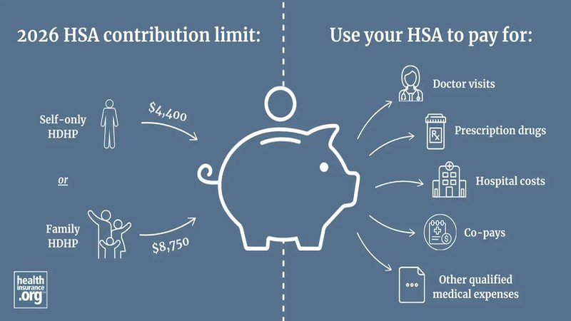

HSA Triple Tax Advantage: The Most Underrated Tax Tool
I was reviewing a client's tax return last month when I noticed something odd. $7,300 deduction for HSA contributions. He is 38. Healthy. Never goes to the doctor. "Why are you maxing out your HSA?" I asked. He looked at me like I had asked why he breathes air. "Because you told me to, Michael. Three years ago. You said it was the best tax deal in the code."
He was right. I did say that. And it is still true. The Health Savings Account is the most underutilized, misunderstood, and powerful tax tool available to most taxpayers. Here is why.
Triple Tax Advantage: The Holy Grail
No other account in the tax code offers this:
Tax-deductible contributions. Every dollar you contribute reduces your taxable income. If you are in the 24% bracket, a $4,300 contribution saves $1,032 in federal tax. If your state has income tax, you save there too (except California, which taxes HSA contributions—one of many reasons I do not live there).
Tax-free growth. Interest, dividends, capital gains inside the HSA are never taxed. Not in year one. Not in year twenty. Not ever. Unlike a 401(k) where growth is tax-deferred (you pay tax on withdrawal), HSA growth is truly tax-free if used for medical expenses.
Tax-free withdrawals for medical expenses. Pay for qualified medical expenses with HSA funds, and you never pay tax on the money. Not the contribution. Not the growth. Not the withdrawal. Triple tax-free.
2026 HSA Contribution Limits
Self-only coverage: $4,300. Family coverage: $8,550. Catch-up contribution (age 55+): $1,000.
For a family in the 24% bracket, maxing out saves $2,052 in federal tax annually. Over 20 years, that is $41,040 in tax savings on contributions alone. Plus tax-free growth. Plus tax-free withdrawals. The math is staggering.
Who Qualifies?
You must be enrolled in a High Deductible Health Plan (HDHP). For 2026, that means: minimum deductible of $1,650 self-only / $3,300 family, and maximum out-of-pocket of $8,300 self-only / $16,600 family.
You cannot have other health coverage (except specific permitted insurance). Cannot be enrolled in Medicare. Cannot be claimed as a dependent on someone else's return.
The "Pay Cash, Save Receipts" Strategy
Here is the advanced move most people miss. You do not have to reimburse yourself from the HSA immediately. Pay medical expenses out of pocket, save the receipts, and let your HSA grow tax-free for decades. Then, in retirement, reimburse yourself for decades of accumulated medical expenses. Tax-free.
I have a client who has been doing this for 15 years. His HSA balance: $87,000. His saved medical receipts: $34,000. He can withdraw $34,000 tax-free anytime—this year, next year, in retirement. The remaining $53,000 continues growing tax-free. At 7% growth, that $53,000 becomes $200,000+ by retirement.
✅ Estimated Tax Safe Harbor Calculator
Determine if you meet safe harbor requirements.
Try This Tool →All data stays in your browser.
The Retirement Healthcare Bomb
Fidelity estimates a 65-year-old couple retiring in 2026 will need $315,000 for healthcare in retirement. Medicare does not cover everything. Dental, vision, hearing aids, long-term care, Medicare premiums, deductibles, copays—it adds up fast.
An HSA is the best vehicle to save for this. After age 65, you can withdraw for ANY purpose (not just medical) penalty-free. You pay income tax on non-medical withdrawals, same as a 401(k). But medical withdrawals remain tax-free. So you use it for medical first, then treat it as a backup retirement account.
HSA vs FSA: Do Not Confuse Them
Flexible Spending Accounts (FSAs) are "use it or lose it" annually. HSA balances roll over forever. FSA contribution limits: $3,200 for 2026. HSA: $4,300/$8,550. FSA has no investment growth. HSA can be invested in stocks, bonds, mutual funds. FSA is employer-owned. HSA is yours forever.
If you have a choice, choose HSA every time. The only reason to use FSA is if your employer does not offer an HSA-eligible HDHP.
Investment Options: Do Not Leave It in Cash
Most HSA providers default your contributions to a low-interest savings account. Do not leave it there. Invest it. My HSA is 80% index funds, 20% bonds. Average return over five years: 9.2%. Tax-free.
Providers vary: Fidelity HSA has excellent investment options and no fees. Lively is popular with freelancers. HealthEquity and HSA Bank are common employer-sponsored options. Compare fees, investment choices, and ease of use.
The Receipt-Keeping Discipline
If you use the "pay cash, save receipts" strategy, you need a system. I scan every medical receipt into a cloud folder labeled by year. Physical receipts fade. Digital receipts are forever. The IRS can audit HSA withdrawals for medical expenses. You need proof.
I tell clients: treat HSA receipts like tax records. Keep them for seven years minimum. Organize by year. Back up everything. If the IRS asks, you produce a folder. Not a shoebox. Not "I think I have them somewhere." A folder. With dates. With amounts. With provider names.
The California Exception
California and New Jersey tax HSA contributions at the state level. They are the only states that do this. If you live in California, your HSA contribution is deductible federally but not state. It is still worth doing—the federal savings alone justify it—but the triple advantage becomes a 2.5x advantage.
Another reason I am glad I moved to Texas. No state income tax means no state HSA tax. Every dollar of contribution, growth, and withdrawal is truly tax-free.
My client from the opening story? His HSA balance hit $31,000 last month. He is 41. If he keeps maxing out until 65, contributing $8,550 annually with 7% growth, he will have roughly $580,000. Tax-free. For medical expenses. In retirement. "Best advice you ever gave me," he said. I agreed. Cooper got an extra walk that evening. Good advice deserves celebration.
Michael Harrison, CPA | Austin, TX
The HSA and Medicare: The Transition Trap
You cannot contribute to an HSA once you enroll in Medicare. Period. Not Medicare Part A. Not Medicare Part B. Any Medicare enrollment disqualifies HSA contributions.
The trap: Many people enroll in Medicare Part A at 65 (it is free if you have 40 quarters of work) while still working and covered by employer HDHP. This disqualifies HSA contributions. Even though they have employer coverage. Even though they are not using Medicare. The enrollment alone kills HSA eligibility.
If you want to keep contributing to HSA past 65, you must delay ALL Medicare enrollment. If you are still working and covered by employer insurance, you can delay Medicare without penalty. But if you enroll in Social Security (which automatically enrolls you in Medicare Part A), you are disqualified.
I had a client who filed for Social Security at 65, thinking he could keep his HSA. Wrong. Social Security enrollment triggered Medicare Part A. HSA contributions stopped. He had already contributed $4,300 for the year. We had to withdraw the excess contribution plus earnings. Tax + 6% excise tax on the excess. Messy. Avoidable.
If you are approaching 65 and want to maximize HSA contributions, delay Social Security and Medicare until you retire or stop HSA contributions. The extra year or two of contributions can add $8,550-$17,100 to your balance. Worth planning for.
The HSA and Long-Term Care Insurance
HSA funds can pay for qualified long-term care insurance premiums. But the amount is limited based on age:
Age 40 or less: $480
Age 41-50: $890
Age 51-60: $1,790
Age 61-70: $4,770
Age 71+: $5,960
These limits adjust annually for inflation. For 2026, they are slightly higher.
This is valuable because long-term care insurance is expensive and not deductible as a medical expense unless it exceeds 7.5% of AGI (which it rarely does for most taxpayers). Paying premiums from HSA is tax-free. No deduction needed.
I have a 58-year-old client who pays $3,600 annually for LTC insurance. He pays from his HSA. Tax-free. If he paid personally, it would not be deductible (his AGI is $85,000; 7.5% floor = $6,375; LTC premium is below floor). HSA saves him $864 in tax annually (24% bracket on $3,600).
The HSA and Medicare Premiums
Once you are on Medicare, you cannot contribute to HSA. But you can USE existing HSA funds for Medicare premiums. Part B, Part C (Medicare Advantage), Part D (prescription drug), and Medicare Advantage premiums are all qualified medical expenses.
Standard Part B premium for 2026: $185/month = $2,220/year. Part D: varies, roughly $30-100/month = $360-1,200/year. Total: $2,580-3,420/year. For a couple: $5,160-6,840/year.
If you have $100,000 in HSA at retirement, and Medicare premiums cost $6,000/year for you and your spouse, your HSA covers 16+ years of premiums. Tax-free. Plus other medical expenses. Plus the balance keeps growing.
This is why I tell clients: max out your HSA every year you are eligible. Even if you are healthy. Even if you do not need the money now. It is the best retirement healthcare savings vehicle available.
The HSA and Adult Children
Here is a strategy most people miss: If you have a family HDHP and adult children (under 26, as required by ACA), you can contribute up to the family limit ($8,550 for 2026) and use the funds for ANY family member's qualified medical expenses. Not just your own.
Example: You are 55, covered by family HDHP. Your 24-year-old daughter is on your plan. She has $3,000 in medical expenses. You pay from your HSA. Tax-free. Your contribution limit is still $8,550 (plus $1,000 catch-up for your age 55+). You are effectively funding her medical expenses with pre-tax dollars.
I have a client who keeps his 25-year-old son on his family HDHP specifically for this. The son has chronic medical needs. $4,000-$6,000 annually in expenses. Paid from dad's HSA. Tax-free. "I am basically getting a tax deduction for my son's medical bills," the client said. Yes. Yes, you are.
The HSA and Divorce
In divorce, HSA balances are marital property. They can be divided by court order. The receiving spouse can use the funds for their own qualified medical expenses. No tax. No penalty.
But: If the receiving spouse is not HSA-eligible (no HDHP), they cannot contribute to the HSA. They can only use existing funds. And if they are under 65 and use funds for non-medical expenses, they pay tax + 20% penalty.
I have had two divorce cases involving HSA division. Both were straightforward. Court ordered 50/50 split. HSA trustee transferred half to recipient's HSA. Clean. Tax-free transfer.
The HSA and Death
If you die with HSA funds, the treatment depends on your beneficiary:
Spouse beneficiary: HSA becomes their HSA. They can use it for their medical expenses. Tax-free. They must be HSA-eligible to contribute, but can always use existing funds.
Non-spouse beneficiary: The HSA ceases to be an HSA. The balance is taxable to the beneficiary in the year of death. No stretch. No continued tax-free growth. Just ordinary income.
Estate beneficiary: The HSA balance is included in your taxable estate. If estate tax applies (over $13.99 million), the HSA is taxed at 40%. Then distributed according to estate plan.
I recommend naming your spouse as primary beneficiary. If no spouse, consider using HSA funds before other retirement accounts (since non-spouse beneficiaries get hit with immediate tax). Or name a charity as beneficiary—charities pay no tax on inherited HSAs.
A client named his adult son as HSA beneficiary. $87,000 balance. Client died at 72. Son inherited. $87,000 taxable income in one year. Pushed son from 22% to 32% bracket. Tax on HSA: roughly $24,000. "I did not know it worked this way," the son said. Most people do not.
The HSA Contribution Timing
You can contribute to an HSA for a tax year until the tax filing deadline (April 15 of the following year). But you must have been HSA-eligible for the month of December to contribute for the full year. If you become eligible mid-year, you can contribute the full annual amount if you remain eligible through December of the following year (the "last-month rule").
Example: You start a new job with HDHP coverage on July 1, 2026. You can contribute the full $8,550 for 2026 IF you remain HDHP-eligible through December 31, 2027. If you lose eligibility before then (switch to non-HDHP, enroll in Medicare, etc.), you must pay tax + 10% penalty on the excess contribution.
I had a client contribute $8,550 in December 2025 after starting HDHP coverage in November. He planned to switch to a PPO in March 2026. "I will just contribute the full year," he said. I warned him about the last-month rule. He did it anyway. Lost HDHP eligibility in March. Excess contribution: $7,125 (10/12 of $8,550). Tax + 10% penalty: roughly $850. "You warned me," he admitted. Yes. Yes, I did.
The HSA and FSA Coordination
You generally cannot have both an HSA and a general-purpose FSA. The FSA disqualifies HSA eligibility. But you CAN have a limited-purpose FSA (dental and vision only) or a post-deductible FSA (kicks in after HDHP deductible is met) alongside an HSA.
Some employers offer HSA-compatible limited FSAs. You contribute to both. Use FSA for dental/vision. Use HSA for everything else. This maximizes tax savings across both accounts.
I have a client who contributes $3,000 to limited FSA and $8,550 to HSA. Dental work: $2,400. Vision: $600. FSA covers both. HSA untouched, growing. Total tax savings: roughly $2,900 annually. "Best benefits strategy I have ever used," he said.
My Final Thoughts on HSAs
If you are eligible for an HSA, contribute the maximum. Every year. Without exception. Invest the funds. Do not leave them in cash. Save receipts for medical expenses paid out of pocket. Let the HSA grow tax-free for decades.
In retirement, your HSA is a triple-tax-free medical expense fund AND a backup retirement account (taxable withdrawals after 65, tax-free for medical). No other account offers this combination.
I max out my family HSA every year. $8,550. Invested in index funds. Current balance: $67,000. I have $12,000 in saved receipts. I am 42. If I keep contributing $8,550 annually with 7% growth until 65, my balance will be roughly $580,000. Tax-free. For medical expenses. In retirement.
My client from the opening story? His balance hit $34,000 last month. He is 41. He started three years ago. "Best advice you ever gave me," he said. I agreed. Cooper got an extra walk that evening. Good advice deserves celebration.
Michael Harrison, CPA | Austin, TX